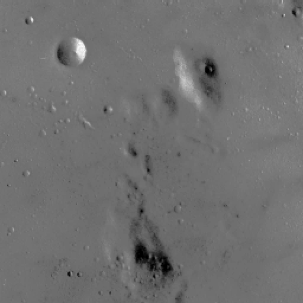
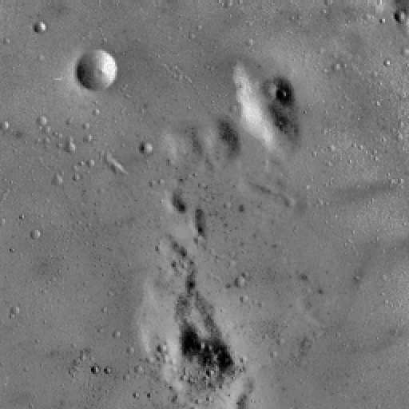
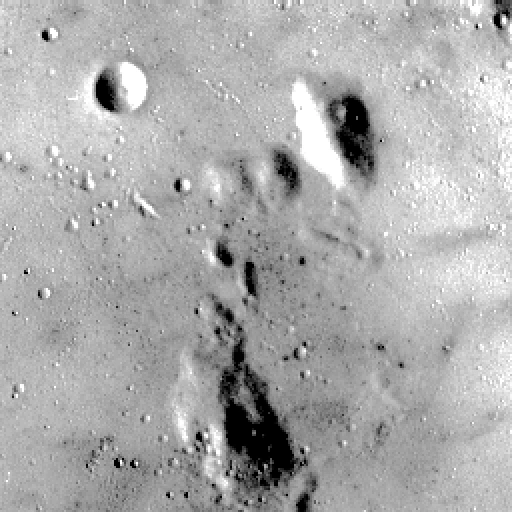
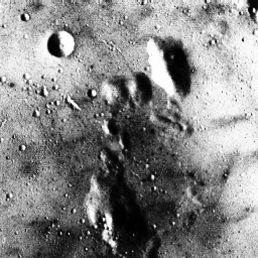

Read the histogram
Intensity on the horizontal axis; pixel count on the vertical. A histogram describes tone, not where objects are.
Reveal the details hiding between dark and light. Explore histogram equalization and contrast adjustment, one pixel at a time.


A histogram counts the pixels at each brightness level. When most values cluster in a narrow range, an image can look flat, even if a few pixels reach pure black or white.
This laboratory redistributes or rescales those intensities. Compare a single global mapping with linear stretching and locally adapted equalization to see how each changes image visualization.
Intensity on the horizontal axis; pixel count on the vertical. A histogram describes tone, not where objects are.
The cumulative distribution creates one intensity mapping for the entire image.
s ≈ 255 × normalized CDF(r)Scale a selected input range to 0–255. Optional percentile clipping reduces the influence of extreme values.
s = clip((r − low) × 255 / range)CLAHE equalizes small tiles, clips histogram peaks, and blends mappings across neighboring tiles.
The three learning objectives from the laboratory handout.
Understand and implement histogram equalization to enhance image contrast.
Perform global and adaptive histogram equalization to improve image quality.
Apply contrast adjustment techniques and analyze their impact on image visualization.
Four parts, one shared image. Run the handout’s techniques, inspect real histograms, and keep your results.
Load an image, inspect its histogram, and apply equalizeHist() to grayscale or the Y channel in YUV color space.
Count intensities → calculate the cumulative distribution → subtract its first nonzero value → normalize → map pixels. A constant image is kept unchanged. The output histogram need not be flat because discrete input levels cannot be split.
Color mode transforms only Y, leaving U and V unchanged before conversion back to RGB. RGB gamut clipping can still change perceived colors; it is not a guarantee of identical color appearance.
Compare linear contrast stretching and Contrast Limited Adaptive Histogram Equalization with the original and globally equalized image.
All methods use the same input and the same processing channel. Histograms use a shared vertical scale within each comparison.
Linear stretching: map the selected lower and upper percentiles to 0 and 255, then clip values outside that range. This differs from histogram equalization, which uses a nonlinear cumulative mapping.
CLAHE: OpenCV clips each tile’s histogram, redistributes the excess counts, and interpolates neighboring mappings. The clip limit controls amplification; CLAHE is not a denoising method.
Histograms: grayscale mode counts grayscale values. Color mode counts the working Y channel before RGB reconstruction; final RGB values may be clipped. More spread or a larger standard deviation does not automatically mean better image quality.
The handout asks you to create Python code. This runnable implementation uses OpenCV, NumPy, and Matplotlib, with the Moon image included.
python -m pip install -r requirements.txtpython histogram_lab.pyLoading source…The Word handout contains procedure instructions, not supplied Python code. The source here implements those procedures. Python runs locally; the website runs OpenCV WebAssembly in a worker.
Results from your most recent completed Part 2 run.
| Version | Mean | Std. deviation | Min / Max | Entropy (bits) |
|---|---|---|---|---|
| Run a comparison to calculate statistics. | ||||
Standard deviation measures intensity spread. Entropy measures the distribution’s information content. Neither measures recovered detail or proves that one result is visually better.
Run Part 2 to compare the measured contrast of the same input across all methods.
Inspect edges, shadows, and highlights. Global equalization can reveal weak tonal differences, but it can also make the result look harsh.
One global mapping treats identical intensities alike everywhere. CLAHE adapts mappings to local neighborhoods, with limited amplification.
Look for exaggerated grain, clipped highlights, and altered colors. CLAHE limits enhancement but can still amplify noise, especially at high clip limits.
Genuine saved outputs, independent of your current upload. Grayscale · stretching 2–98% · CLAHE clip limit 2.0 · 8 × 8 tiles. These are reference images, not live processing.


The Moon sample already contains some 0 and 255 pixels, so min–max stretching leaves it unchanged. At the default 2% clipping, the working bounds are 78 and 129. Global equalization increases standard deviation from 13.33 to 74.01; CLAHE gives 18.53. These measurements describe intensity spread, not a ranking of quality.
All five questions from the Word handout, answered concisely.
Download written answers ↗Histogram equalization is a contrast enhancement technique that remaps pixel intensities using their cumulative distribution, spreading frequently occurring tones across a wider available range.
It can reveal details in low-contrast images by increasing separation between commonly occurring intensity values, making features easier to inspect or process. It does not recover missing information or improve every image.
Count pixels at each intensity, calculate the cumulative histogram, and use a normalized cumulative mapping to assign output intensities. OpenCV subtracts the first nonzero cumulative value and maps into 0–255 for 8-bit input; constant images remain unchanged. Discrete output histograms need not be perfectly uniform.
Contrast Limited Adaptive Histogram Equalization divides an image into tiles, clips large histogram bins, redistributes the excess counts, and equalizes locally. Interpolation between neighboring tile mappings reduces visible boundaries. Clipping limits contrast amplification, but does not remove noise.
One application is enhancing low-contrast surveillance footage to make objects and scene details easier to distinguish. Other uses include improving scanned documents and satellite imagery before visual inspection or further processing.
Histogram equalization, linear stretching, and CLAHE change how existing intensities are displayed. Global equalization can produce strong overall contrast; stretching rescales a chosen range; CLAHE adapts enhancement locally.
The Moon experiment shows that a full 0–255 range can still contain weak contrast. Compare visibility, noise, clipping, and color appearance alongside histograms. The best method depends on the image and the features you need to inspect.
Try another image